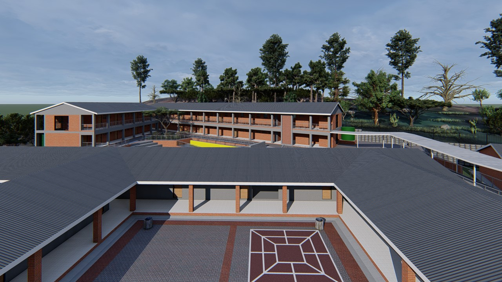

nikela primary school — design render
nikela primary school — design render
educational — r 80m


nikela primary school
context
a full primary-school campus on an open rural site — the brief asked for teaching, assembly and sports facilities that could grow into a recognisable centre for the surrounding community.
response
long classroom wings frame a central courtyard and a tiered assembly amphitheatre, with a sports field and hard courts set to one side — the plan reads clearly from the air and on the ground.
materiality
face-brick wings under pitched charcoal roofs, paired with shaded walkways and rainwater tanks — durable, low-maintenance and suited to a school's daily wear.
